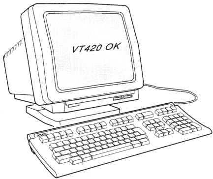

This chapter introduces you to the VT420 video display terminal. The VT420 is a general-purpose terminal that you use to communicate with a host computer system. The chapter provides an overview of the terminal and its basic operating features. The chapter also tells you where to look in this guide for more information about each feature.
The VT420 has two main components, a monitor/terminal unit and a keyboard (Figure 1-1). The monitor/terminal unit is simply called the terminal in the rest of this guide.
 |
The VT420 uses a 359 mm (14 inch) monochrome screen. The VT420 screen can display 24, 25, 36, or 48 lines of text in 80 or 132 columns.
There are three connectors on the rear of the terminal, for connecting the VT420 to one or two host computer systems. You can also use one of the connectors to connect to a printer. Chapters 2 and 3 describe the terminal's connectors.
The terminal's tilt and swivel base lets you adjust the screen to the viewing angle you prefer.
The VT420 uses Digital's LK401 keyboard. The keyboard has four groups of keys and two indicator lights. The main keypad looks similar to a typewriter keypad. A cable connects the keyboard to the right side of the terminal.
Chapter 4 describes the LK410 keyboard.
You can use the VT420 with one or more computer systems. You have several options for connecting your terminal to a computer. You can connect the VT420 directly to a computer, or indirectly through a terminal server or modem. The system you connect to is called the host.
Normally, the keys you type on your keyboard send information to the host. The host stores the information and displays it on the terminal's screen. You can print the data by sending it to a printer connected to the terminal.
You can use the VT420 with the application software on your host. For example, your host may have applications that let you do word processing, data entry, or programming.
With a VT420, you can
Set-up is a series of display screens that let you examine and change the terminal's operating features from the keyboard. Each screen lists a particular set of operating features for the terminal. For example, one set-up screen lists communication features, while another lists keyboard features.
Some features are for your convenience, and some are required by your host computer system. Each set-up feature has a factory-default setting. You can select the settings that are right for your system.
Chapter 5 describes set-up in detail.
When you use the terminal to communicate with a computer system, you have established a session on that system. The VT420 lets you establish two sessions and display data from both sessions at the same time. You can connect the terminal to two different systems, depending on your installation (Chapter 2).
Here are some important tools you use to select and run two sessions:
The procedure for selecting and running two sessions is simple. Here are the basic steps:
Chapter 3 provides the detailed procedures for setting up your terminal to run two sessions. Chapter 7 describes how to use two sessions.
You can divide your screen into two windows. With windows, you can see information from two sessions at the same time. There are two styles of windows, full screen and split screen. The default is a full-screen window.
To change the windows style, you simply press the Ctrl F4 key combination.
When you divide the screen into two windows, you can adjust their relative size by moving the border between them up or down. Chapter 7 describes how to use windows.
The VT420 lets you select a font size to display 24, 36, or 48 lines on the screen. You use the lines/screen feature to select the number of display lines. Chapter 7 describes how to select the number of lines/screen.
The VT420 has off-screen memory to store data entered from the keyboard or host system. The VT420 can store 144 lines of text.
The terminal's memory is called page memory, because you can divide the 144 lines into a different number of pages. By default, the terminal uses 6 pages of 24 lines each. If you run two sessions, the default format for each session is 3 pages of 24 lines.
Pages create boundaries that affect the way the VT420 displays text. To take advantage of page memory, your applications must be able to recognize these page boundaries.
See the page arrangement feature in the "Display Set-Up Screen" section of Chapter 5.
The VT420 has a copy and paste feature that lets you copy information displayed on the screen and send it to the host system. You can send the copied text to the same session or to another session. Chapter 7 describes how to copy and paste text.
The VT420 displays a status line at the bottom of the screen. If you are running two sessions, the terminal displays a separate status line at the bottom of each session. The status line has several fields that provide information about the terminal's operating status. For example, one field shows you the current position of the cursor as a set of screen coordinates (row and column number). Applications may also use the status line to send you messages.
Chapter 4 describes the status line.
The VT420 also displays a keyboard indicator line at the bottom of the
screen, below the status line. This indicator line has several fields that
provide information about the keyboard's operating status. For example,
the first field indicates which session you can edit from the keyboard.
Other fields indicate if screen data is on hold, if the Caps Lock or Shift
Lock setting is in effect, if a compose sequence is in progress, or if you
must wait before entering more keyboard data.
Chapter 4 describes the keyboard indicator line.
The screen align feature on the Set-Up Directory screen lets you adjust the position of the text on your screen for your viewing comfort. If the text is not centered on the screen, you can center it.
Chapter 5 describes the screen alignment feature.
The VT420 lets you select a screen background to improve the readability of text on the screen. The light/dark screen feature in the Display Set-Up screen (Chapter 5) uses an overscan method to fill the screen background.
The VT420 can operate like other VT series text terminals. This feature enables software to recognize the terminal and select the correct emulation automatically. The VT420 can emulate the following text terminals:
To have the VT420 emulate another terminal, you use two features in the General Set-Up screen.
Chapter 5 describes the General Set-Up screen.
The VT420 uses coded character sets to exchange information with a host system. A coded character set is a group of graphic symbols, such as letters and numbers, represented by unique bit combinations or codes.
From the General Set-Up screen, you can choose different character sets to match your computer system or to meet your software application requirements. The VT420 has two 8-bit multinational sets, the DEC Multinational character set and the ISO Latin Alphabet No. 1 character set. The VT420 also has the DEC Technical character set for certain applications.
The VT420 is initially set to use the DEC Multinational character set. This 8-bit character set contains the standard characters for the English language, plus many characters used by major Western European languages.
You can also select the ISO Latin Alphabet No. 1 (ISO Latin-1) character set of the International Organization for Standardization (ISO). The ISO Latin-1 set is similar to the DEC Multinational set, but it is newer and has more characters.
Digital recommends using the ISO Latin-1 set for most applications. However, if you use the DEC Multinational set, many applications will be unaffected by the differences between the two character sets. Refer to the VT420 Programmer Reference Manual for detailed information about the two character sets.
National Replacement Character Sets
The VT420 also supports twelve 7-bit national replacement character sets (NRCs) for older 7-bit applications. The NRCs are similar to the 7-bit ASCII set, but they replace some symbols with characters for European languages.
You can select 8-bit multinational character sets or 7-bit NRCs. If you use the multinational sets, you can select the DEC Multinational or ISO Latin-1 set from the General Set-Up screen. If you use NRCs, you can select the character set from the Keyboard Set-Up screen.
Chapter 5 describes the General Set-Up and Keyboard Set-Up screens. Chapter 9 shows the character sets.
The VT420 Programmer Reference Manual explains the control functions used to access the terminal's features. Programmers use these functions in their applications. The programmer reference manual is intended for users with programming experience.
Chapter 9 of this user guide is a summary of the control functions and commands described in the programmer reference manual. See Appendix B for information on how to order the VT420 Programmer Reference Manual.